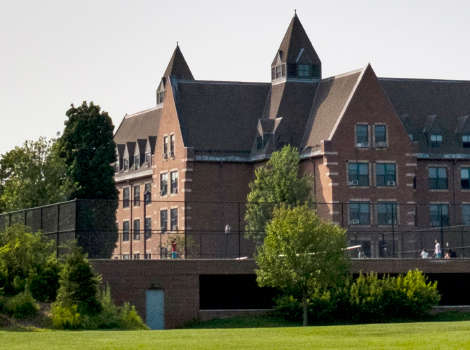
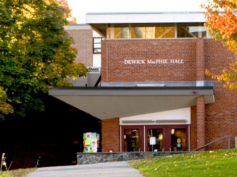
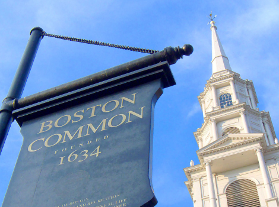
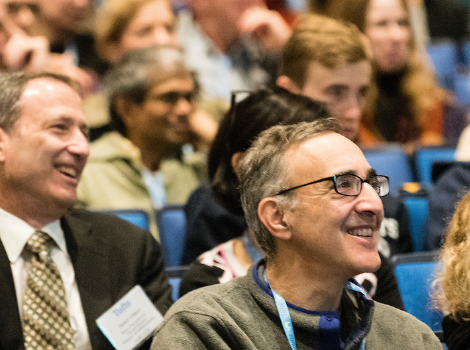

your dorm
All rooms are in Harleston Hall (formerly South Hall) and feature air conditioning, free Wi-Fi, shared bathrooms, electronic security, on-site dorm manager, and 24-hour access. Your on-campus residence gives you access to amenities such as the gym, recreational facilities, and the library.

meal plan
You'll enjoy 11 meals (dinner on Thursday night; breakfast, lunch, and dinner Friday and Saturday; breakfast and lunch Sunday and Monday) at Tufts' award-winning Dewick-MacPhie Dining Center. Sunday night dinner will be served at the Gala.

field trips
If your class takes a field trip, you'll be provided with a delectable lunch and transportation. An additional activity fee is required for the two courses with field trips, which are a critical component of these courses.

minimum age
The Tufts Summer MiniSession program is for adults only. You must be at least 21 years old to attend. While we love children as much as you do, we are not currently offering child care or youth programs.